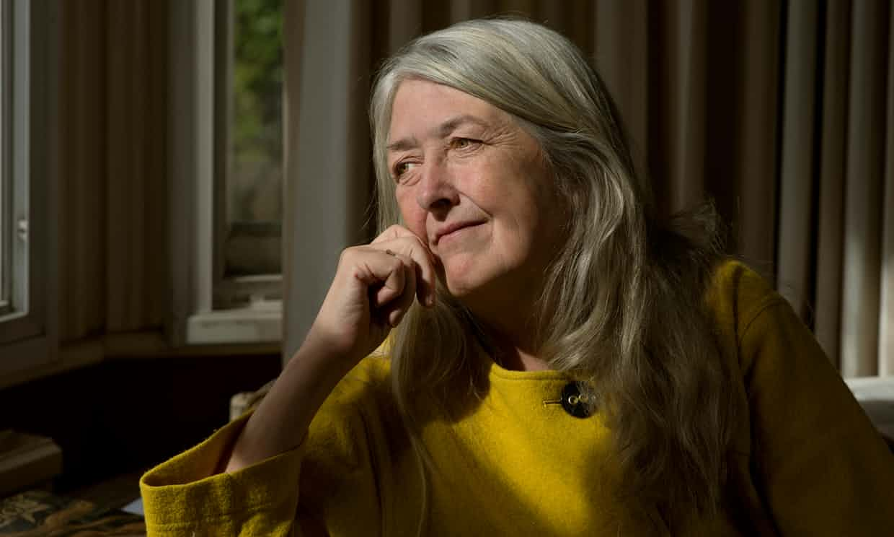
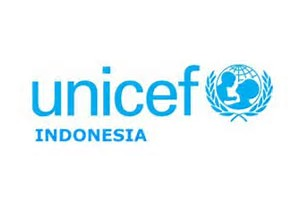

Women & Power: A Manifesto by Mary Beard
Feb 12, 2007view : 3,487,497In tracing the roots of misogyny to Athens and Rome, Mary Beard has produced a modern feminist classic.
Read MoreRacism
Feb 12, 2007view : 3,487,497Racism is the belief that characteristics and abilities can be attributed to people simply on the basis of their race and that some racial groups are superior to others. Racism and discrimination have been used as powerful weapons encouraging fear or hatred of others in times of conflict and war, and even during economic downturns.
Read More

#IniSuaraku: What Young People Think about Access to Reproductive Care
Feb 12, 2007view : 3,487,497Each year, 1 June marks the Global Day of Parents, a day emphasizing the critical role of parents in the rearing of children. Children need to be nurtured and protected; no child should be a parent.
Read More